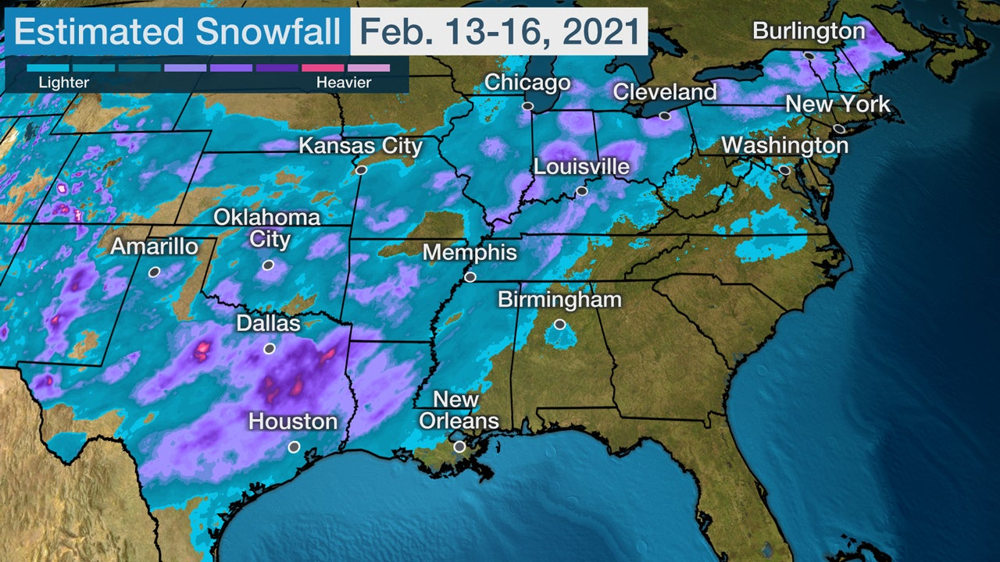
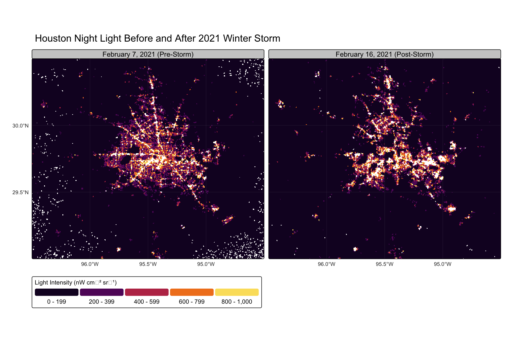
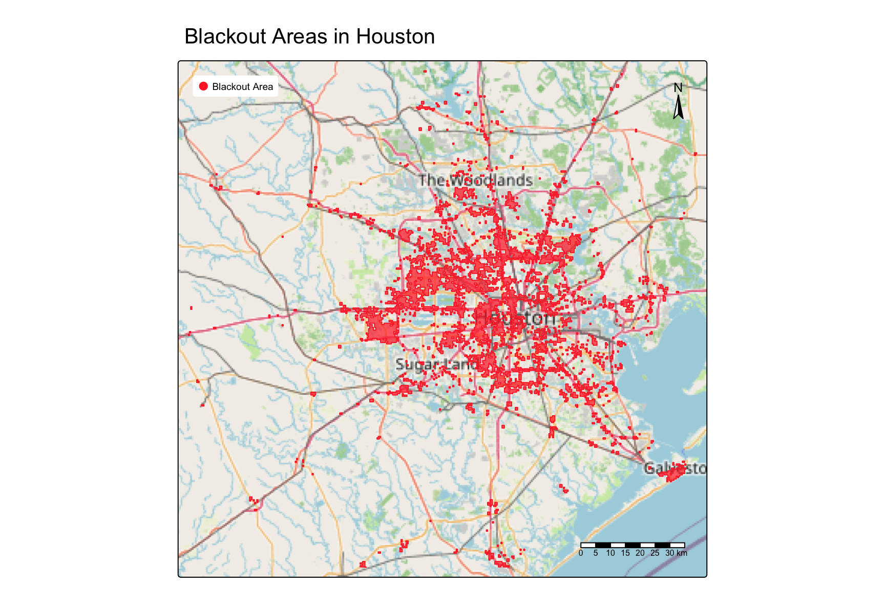
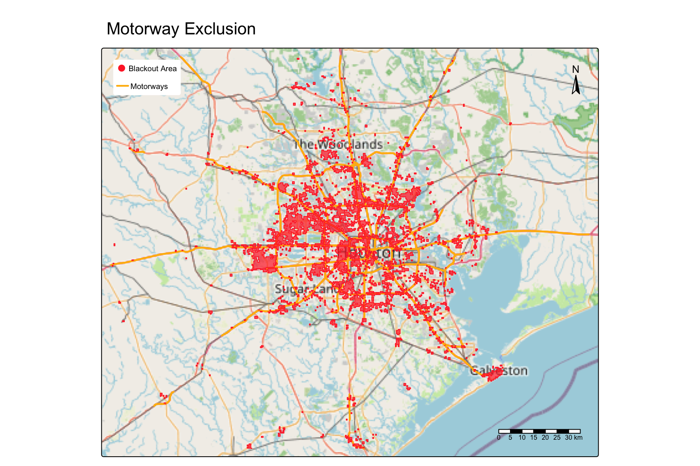
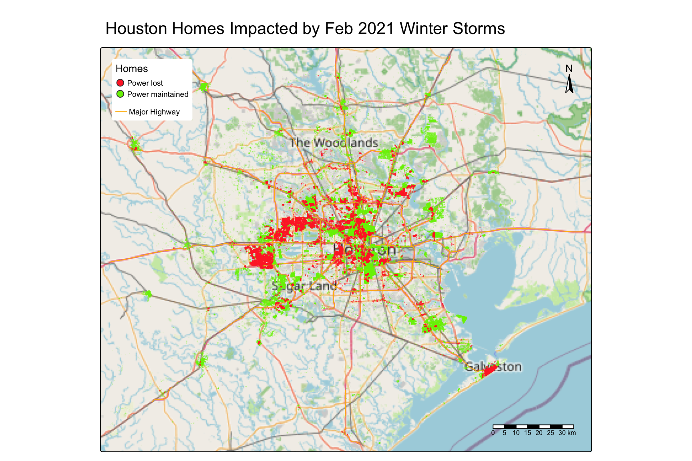
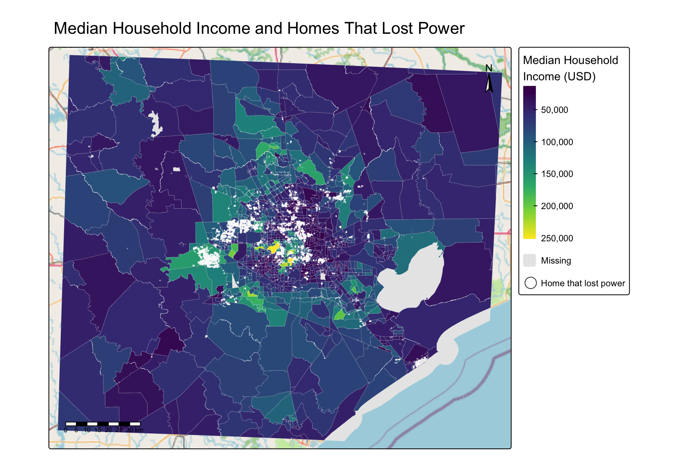

Extreme weather events are becoming more frequent and intense, with devastating impacts on communities and infrastructure. In February 2021, Winter Storm Uri swept across Texas, causing an estimated $130 billion in economic losses. At its peak, more than 4.5 million customers (over 10 million people) lost electricity, some for several days (Busby et al. 2021). The crisis was worsened by a cascade of failures across the power system. Freezing temperatures caused multiple generation sources to fail, most notably natural gas, and as demand reached record highs, the state grid approached a dangerous drop in frequency. To prevent a total system collapse, grid operators cut power to millions of customers, leading to widespread blackouts across the state, including the Houston metropolitan area (Soham Ghosh and Dutta 2021).
Research Question
This project aims to answer the question:
How did night light intensity in the Houston metropolitan area change after the February 2021 winter storms, and how were blackout impacts distributed across communities of different income levels?
Why it Matters
Understanding where outages occurred and which homes were affected can help utilities and grid operators prioritize infrastructure upgrades before future events. Examining how impacts varied across income levels can also reveal whether certain communities were disproportionately affected. Identifying these vulnerable communities can help decision-makers direct resources where they are needed most during future extreme weather events.
Background
The Crisis
Winter Storm Uri was not the first time Texas faced a winter energy crisis. After a 2011 cold snap caused widespread outages, the state did not adequately winterize its electricity and natural gas infrastructure. In 2021, the consequences of that inaction became clear. The two systems depend on each other: as freezing temperatures disrupted gas production, which fell by nearly half at its lowest point, pipeline pressure dropped and gas-fired power plants struggled to run (Busby et al. 2021). At the same time, losing those plants reduced the electricity available to keep gas facilities operating, creating a feedback loop. Nuclear, coal, and wind generation also experienced disruptions, though on a smaller scale. In total, about 30 GW of generation went offline while demand climbed to record levels. Facing a potential collapse of the entire grid, the Electric Reliability Council of Texas (ERCOT), the nonprofit that manages most of the state’s power grid, ordered utilities to cut power to millions of customers (Busby et al. 2021).

Forecast map of Winter Storm Uri, February 2021. Source: The Weather Channel
Leveraging Data Science
The storm affected millions of people across Texas, but its impacts were not evenly distributed. Statewide maps and outage totals tell part of the story, but they can make it seem as though every community was affected equally. Geospatial analysis allows us to look more closely. Satellite-based night lights data can reveal where outages occurred across an entire metropolitan area, even where detailed utility records are unavailable. Combining this with building footprints and census data makes it possible to estimate how many homes lost power and examine whether certain communities, such as lower-income neighborhoods, were disproportionately affected.
Data and Methods
Data Sources
This analysis utilizes four datasets from three different sources:
NASA VIIRS Night Lights - NASA’s Visible Infrared Imaging Radiometer Suite (VIIRS) is a satellite instrument that captures images of Earth day and night using 22 different channels of light. The analysis uses two dates of imagery: February 7, 2021, a clear night before the storms, and February 16, 2021, during the peak blackout period. The data is measured in nanowatts per square centimeter per steradian (nW cm⁻²sr⁻¹) (NASA LAADS DAAC 2021).
OpenStreetMap Building Footprints - OpenStreetMap (OSM) is a free, editable geographic database and world map built and maintained by a global community of volunteers. It contains various features, but for this analysis, building polygons in the Houston area were filtered using an SQL query to keep those classified as residential, apartments, house, static_caravan, or detached, as well as unclassified buildings with no type or name (OpenStreetMap Contributors 2021).
OpenStreetMap Road Networks - OSM also contains road network data. For this analysis, I used line features of the highway network in the Houston area, filtered using an SQL query to fclass='motorway'(OpenStreetMap Contributors 2021).
U.S. Census American Community Survey - The U.S. Census Bureau provides five-year estimates at the census tract level, including median household income. This analysis uses the 2015-2019 estimates to examine how areas with different incomes were affected (United States Census Bureau 2019).
How the Analysis was Approached
The analysis was conducted in these steps:
Load Packages and Data - Load the required packages along with the VIIRS tiles, OSM building footprints, OSM motorway network, and U.S. Census data.
Prepare Spatial Data - Reproject datasets to the same coordinate reference system so they align properly.
Join Datasets - Join socio-economic data to geometries and then merge the VIIRS tiles for each date.
Calculate Light Intensity Changes - Compare the pre- and post-storm imagery to calculate the change in light intensity.
Define Blackout Threshold - Classify areas that experienced a light intensity drop greater than 200 nW cm⁻²sr⁻¹ as experiencing a blackout.
Exclude Highways - Remove areas within 200 m of major highways, since reduced traffic during the storm could cause drops in light unrelated to power loss.
Identify Impacted Homes - Find residential buildings that fall within blackout areas.
Compare Socioeconomic Effects - Compare median household income between census tracts that did and did not experience blackouts.
Loading and Preparing the Data
Code
# Load in required packageslibrary(tidyverse) # Data manipulation and visualizationlibrary(here) # File path managementlibrary(terra) # Raster data processinglibrary(stars) # Spatiotemporal arrayslibrary(sf) # Spatial data handlinglibrary(tmap) # Thematic mappingtmap_options(show.messages =FALSE, show.warnings =FALSE)
Code
# Define data folder once to shorten file pathsdata_dir <-here("projects", "texas-storm-blackouts", "data")# Load in Night Lights data (two tiles per date)light_feb_07_h5 <-read_stars(file.path(data_dir, "VNP46A1", "VNP46A1.A2021038.h08v05.001.2021039064328.tif"))light_feb_07_h6 <-read_stars(file.path(data_dir, "VNP46A1", "VNP46A1.A2021038.h08v06.001.2021039064329.tif"))light_feb_16_h5 <-read_stars(file.path(data_dir, "VNP46A1", "VNP46A1.A2021047.h08v05.001.2021048091106.tif"))light_feb_16_h6 <-read_stars(file.path(data_dir, "VNP46A1", "VNP46A1.A2021047.h08v06.001.2021048091105.tif"))# Load in OpenStreetMap highway data (motorways only)roads_query <-"SELECT * FROM gis_osm_roads_free_1 WHERE fclass='motorway'"highway <-st_read(file.path(data_dir, "gis_osm_roads_free_1.gpkg"),query = roads_query,quiet =TRUE# suppress read messages)# Load in OpenStreetMap building data (residential only)houses_query <-"SELECT * FROM gis_osm_buildings_a_free_1 WHERE (type IS NULL AND name IS NULL) OR type IN ('residential', 'apartments', 'house', 'static_caravan', 'detached')"houses <-st_read(file.path(data_dir, "gis_osm_buildings_a_free_1.gpkg"),query = houses_query,quiet =TRUE# suppress read messages)# Load in U.S. Census tract geometries and income datacensus_gdb <-file.path(data_dir, "ACS_2019_5YR_TRACT_48_TEXAS.gdb")census_tracts <-st_read(census_gdb, layer ="ACS_2019_5YR_TRACT_48_TEXAS", quiet =TRUE)census_income <-st_read(census_gdb, layer ="X19_INCOME", quiet =TRUE)
These datasets were not originally in the same coordinate reference system (CRS). Different CRSs describe locations using different coordinate systems and units, so the same place can have different coordinates in each one. Datasets that are analyzed or mapped together must share a CRS, or they will not align correctly. I standardized all datasets to EPSG:3083 (NAD83 / Texas Centric Albers Equal Area), which preserves area and uses meters, making it well suited for distance-based steps like the 200 m highway buffer. To verify the reprojection worked, I added checks that return a warning if the CRSs do not match.
Code
# Transform CRSshighway <-st_transform(highway, crs =3083)houses <-st_transform(houses, crs =3083)# Warn if the transformation did not produce matching CRSsif (st_crs(highway) !=st_crs(houses)) {warning("Highways and houses have different CRSs")}# Verify CRSs matchst_crs(highway) ==st_crs(houses) # Output is TRUE
Once these datasets were reprojected to having the same CRS, a left join was used on the socio-economic dataset that is used later in the analysis
Code
# Change column name to make them matchcensus_income <- census_income |>rename("GEOID_Data"="GEOID")# Left join income data to geometriessocio_economic <- census_tracts |>left_join(census_income, by ="GEOID_Data") |>st_transform(st_crs(houses)) # reproject to match building data# Verify the join worked sum(is.na(socio_economic$GEOID_Data)) # = 0
Results
Visualizing the Comparison of Night Light Intensities
The analysis began by comparing night light intensity from VIIRS imagery on February 7, 2021 (pre-storm) and February 16, 2021 (post-storm). For visualization, values were limited to 0–1,000 nW cm⁻² sr⁻¹ so that a small number of very bright pixels would not dominate the color scale; the blackout analysis itself uses the full, unmasked data.
Code
# Combine the two tiles for each datepre_storm <-st_mosaic(light_feb_07_h5, light_feb_07_h6) # pre stormpost_storm <-st_mosaic(light_feb_16_h5, light_feb_16_h6) # during blackout# Create the bbox extent of Houstonhouston_bbox <-st_bbox(c(xmin =-96.5, ymin =29, xmax =-94.5, ymax =30.5),crs =st_crs(pre_storm))# Clip extent of the raster layerspre_storm_houston <-st_crop(pre_storm, houston_bbox)post_storm_houston <-st_crop(post_storm, houston_bbox)# Mask unrealistic values (>1000 or <= 0)masked_pre_storm <- pre_storm_houstonmasked_pre_storm[(masked_pre_storm >1000) | (masked_pre_storm <=0)] <-NAmasked_post_storm <- post_storm_houstonmasked_post_storm[(masked_post_storm >1000) | (masked_post_storm <=0)] <-NA# Combine layers for mappingcombined_storm <-c(masked_pre_storm, masked_post_storm)# Change names for better map visualizationsnames(combined_storm) <-c("February 7, 2021 (Pre-Storm)","February 16, 2021 (Post-Storm)")

Night light intensity in the Houston area before (left) and after (right) the February 2021 winter storms
The comparison shows a clear decline in night light intensity across Houston after the storms. Many areas that were brightly lit on February 7 appear noticeably darker on February 16, particularly across residential areas surrounding the city center. While night lights are an indirect measure of electricity use, this widespread drop strongly suggests large-scale power loss across the metropolitan area.
Finding Blackout Areas
In order to identify the blackout areas, I calculated the light intensity differennce between the two tiles and classified areas with a difference greater than 200 nW cm⁻²sr⁻¹ as areas that experienced blackouts.
Code
# Calculate difference (change) in night light intensitylight_diff <-rast(pre_storm) -rast(post_storm)# Reclassify the cells and drop any less than 200 nW cm⁻²sr⁻¹rcl <-matrix(c(-Inf,200,NA,200,Inf,1 ),ncol =3,byrow =TRUE)# Reclassifyblackout_mask <-classify(light_diff, rcl = rcl)# Vectorize the raster into polygonsblackout_vector <-st_as_stars(blackout_mask) |>st_as_sf(merge =TRUE) |>st_make_valid()# Crop the polygon to Houston extenthouston_blackout <-st_crop(blackout_vector, houston_bbox) |>st_transform(crs ="EPSG:3083")

Areas (red) are the regions in Houston where night light intensity dropped by more than 200 nW cm⁻² sr⁻¹ between February 7 and 16, 2021
Excluding Highways from Analysis
Highways are a major source of night light, largely from vehicle traffic. During the storm, reduced traffic on highways could cause drops in light that have nothing to do with power outages. To avoid falsely classifying these areas as blackouts, I created a 200 meter buffer around all motorways and removed those areas from the blackout data.
Code
# Create a 200m buffer around highwayshighway_buffer <- highway |>st_union() |>st_buffer(dist =200)# Remove highway buffers from blackout areasblackout_no_highways <-st_difference(houston_blackout, highway_buffer)

Blackout areas after excluding locations within 200 meters of motorways (yellow lines).
Removing areas near motorways eliminates a noticeable portion of the original blackout area, particularly along the major highways radiating out from downtown Houston. The remaining blackout areas are more likely to reflect actual power outages in residential neighborhoods rather than changes in traffic.
Number of Homes Affected
To estimate the number of homes that lost power, I selected all residential buildings from OpenStreetMap that fall within the blackout areas remaining after the motorway exclusion.
Code
# Filter the houses that relate to blackout areahouses_blackout <- houses |>st_filter(blackout_no_highways)# Count the number of affected homesn_houses <-nrow(houses_blackout)
Approximately 157,408 homes in the Houston area were located in blackout areas during the February 2021 storms. However, this count is based on building footprints, so it can underestimates the number of households affected, since a single apartment building can contain many units.
Code
# Tell sf that building attributes apply to the whole footprint (avoids centroid warnings)st_agr(houses) <-"constant"st_agr(houses_blackout) <-"constant"# Convert buildings to points for mappingall_homes <-st_centroid(houses)impacted_homes <-st_centroid(houses_blackout)# Homes outside blackout areasnot_impacted_homes <- all_homes[!all_homes$osm_id %in% houses_blackout$osm_id, ]

Residential buildings in the Houston area that lost power (red) and maintained power (green) during the February 2021 winter storms, with major highways shown in yellow.
Homes that lost power are concentrated in the dense residential areas west and north of downtown Houston, while many homes on the outskirts of the metro area appear to have maintained power. This uneven pattern suggests that outage impacts varied considerably across neighborhoods, which raises the question of whether certain communities were more affected than others.
Socioeconomic Analysis
To examine whether the impacts of the blackout were evenly distributed, I combined the blackout results with median household income from the 2015-2019 American Community Survey. Comparing where homes lost power with the income levels of the surrounding census tracts can help reveal whether certain communities were disproportionately affected.
Code
# Convert Houston bbox to a polygonhouston_area <-st_as_sfc(houston_bbox) |>st_transform(st_crs(houston_blackout))# Crop census tracts to Houston and rename income columnsocio_houston <- socio_economic |>st_crop(houston_area) |>rename(median_income = B19013e1)

Residential buildings that lost power (red) overlaid on the median household income in Houston, Texas.
Overlaying homes that lost power on median household income shows that outages occurred across a wide range of income levels. Darker colors indicate lower-income tracts, while brighter colors indicate higher-income tracts. While the map alone cannot confirm whether lower-income areas were disproportionately affected, it highlights where outages overlapped with lower-income communities.
Discussion
Main Takeaways
The February 2021 blackouts exposed serious vulnerabilities in Texas’s energy infrastructure, leaving millions of people without power during freezing temperatures. This analysis shows how satellite night lights data, combined with building footprints and census data, can be used to estimate where outages occurred and which homes were affected, even without detailed utility records. In Houston, approximately 30% homes were located in blackout areas, and outages occurred across a wide range of income levels. However, similar exposure does not necessarily mean equal impact. Lower-income households may have had fewer resources to cope with extended outages, such as the ability to relocate or purchase backup heating. Understanding both where outages occurred and who was most vulnerable is essential for planning more resilient and equitable infrastructure.
Limitations
While this analysis provides a useful estimate of the storm’s impacts, several limitations should be considered.
Blackout and buffer thresholds - The 200 nW cm⁻² sr⁻¹ blackout threshold and the 200 m motorway buffer were chosen as reasonable assumptions rather than values derived from supporting evidence. Different thresholds would change the estimated number of affected homes.
Limited imagery - Cloud cover during the storm limited the analysis to two clear nights. Outages that began after February 7 but were restored before February 16 are not captured.
Spatial resolution - VIIRS pixels are roughly 500 m across, so an entire cell is classified as a blackout even if only part of it lost power.
Building data - OpenStreetMap is built by volunteers, so building footprints may be incomplete or misclassified. Each building is also counted once, so apartment buildings with many units lead to an undercount of affected households.
Census timing - The income data comes from the 2015-2019 American Community Survey, which may not reflect conditions in 2021.
Disclosing these limitations makes the analysis more transparent and provides a framework for anyone looking to reproduce or improve it.
Future Directions
This analysis could be extended in several ways. Incorporating additional nights of imagery throughout the storm would make it possible to track how quickly outages spread and how long it took for power to return to normal levels. Validating the results against utility outage reports would help assess the accuracy of the night lights approach and refine the blackout threshold.
The socioeconomic analysis could also be expanded beyond income to include other indicators of vulnerability, such as age, race, or housing type, and could use statistical tests to determine whether differences between groups are significant.
Conclusion
Winter Storm Uri showed how quickly failures in interconnected energy systems can cascade into a public crisis. This analysis used satellite night lights, building footprints, and census data to estimate that approximately 157,408 homes in the Houston area lost power. While the approach has limitations, it offers a scalable way to assess outage impacts when detailed utility data is unavailable. As Texas and other regions work to strengthen their grids, tools like these can help ensure that resilience planning considers not just where outages occur, but who is most vulnerable to them.
Data Access
NASA’s VIIRS Lights Data (VNP46A1) - NASA’s Visible Infrared Imaging Radiometer Suite (VIIRS), housing the h08v05 and h08v06 tiles. Accessed via NASA Earthdata: https://worldview.earthdata.nasa.gov/
OpenStreetMap Roads and Houses Data - Road network and building footprint data. Accessed via Geofabrik: https://download.geofabrik.de/
Busby, Joshua W., Kyri Baker, Morgan D. Bazilian, et al. 2021. “Cascading Risks: Understanding the 2021 Winter Blackout in Texas.”Energy Research & Social Science 77: 102106. https://doi.org/10.1016/j.erss.2021.102106.
Soham Ghosh, Arpit Bohra, and Sreejata Dutta. 2021. “The Texas Freeze of February 2021: Event and Winterization Analysis Using Cost and Pricing Data.”2021 IEEE Electrical Power and Energy Conference (EPEC), 7–13. https://doi.org/10.1109/EPEC52095.2021.9621500.